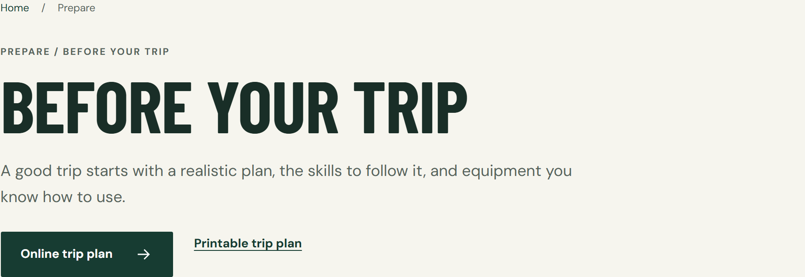

Project display draft
A concept preview with three panels. Final board dimensions and printing will be decided later.

OUTDOOR SAFETY— SEA-TO-SKY
Prepare. Recognize the risks. Know your next step.
THE PROJECT
How can I make outdoor safety advice clear and easy to access? A website, checklists, QR codes and social media help people prepare, recognize risks and respond when plans change.

A TRIP PLAN SOMEONE CAN USE
Leave your route and return time with someone reliable. Agree when they should call 9-1-1 if you have not returned or checked in. Copy, email or print your plan; send it yourself. No return monitoring.
THE TRAIL-START QR IDEA
The sign’s QR opens Quick reminders and links to the full guides. It is a design concept; real trail placement is a future idea.

EXPLORE THE WEBSITE
Clear guides for Sea-to-Sky day trips. Prepare, pack and know your next step.
lzl462.github.io/outdoorsafetyA concept preview with three panels. Final board dimensions and printing will be decided later.